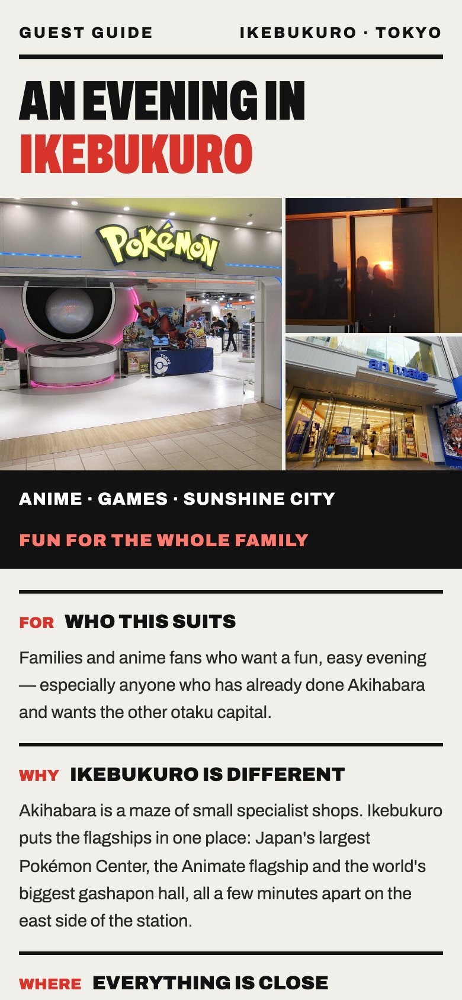
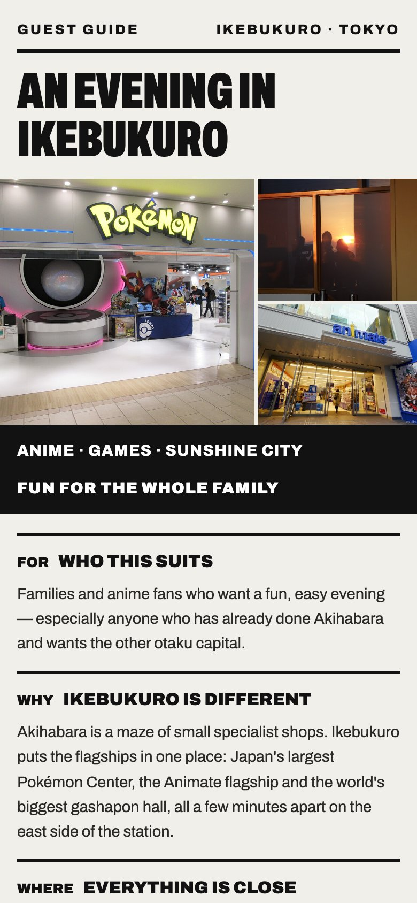

DESIGN BOARDIKEBUKURO GUIDE
Ikebukuro guide — 5 designs
One generic Ikebukuro evening guide page (no guest name, no date), five looks. The content is identical — the difference is the guide profile section at the bottom and how the Anime Sensei watermark is treated. Tap a design to open the full page.
 V1 · StandardWhite profile card with thick black border and round face photo. Brand logo watermark sits faint in the footer.
V1 · StandardWhite profile card with thick black border and round face photo. Brand logo watermark sits faint in the footer. V2 · Dark bandProfile on a full-width black band with a red-ringed face photo, plus an outlined ANIME SENSEI text watermark strip above it.
V2 · Dark bandProfile on a full-width black band with a red-ringed face photo, plus an outlined ANIME SENSEI text watermark strip above it.
V3 · StampProfile card with a red double border and the logo as a tilted round stamp overlapping the corner.
V4 · Minimal monoMonochrome and quiet: small grey face photo between thin rules, ghost logo at the footer's right edge. V5 · Bold redProfile on a full-width red band with a white-ringed face photo, and an oversized ghost logo closing the page.
V5 · Bold redProfile on a full-width red band with a white-ringed face photo, and an oversized ghost logo closing the page.